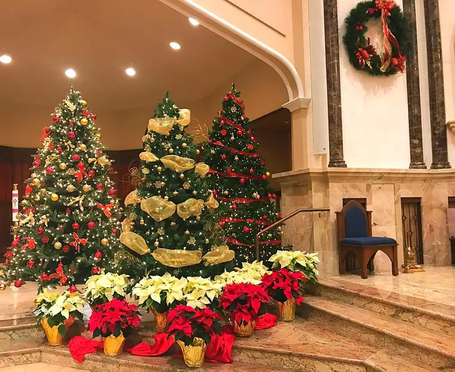

First off, HAPPY NEW YEAR 2018!
You hear a lot about Christmas miracles. This year, our family got one weeks after my dear husband heard the jolting words, “open heart surgery,” after learning of ruptured mitral-valve cords, then entered one of the scariest times in all our lives. His surgery happened Dec. 6, and here we are now, on Dec. 31 heading into the new year, having moved through the daunting reality of his heart literally stopping at the surgery’s start (much to the surgeon’s dismay), the urgent need to massage it back to life, then experiencing a fairly precarious recovery initially, to the point of him being up and about, and, on New Year’s Eve as I write, out with friends to watch a Minnesota Vikings football game.
This is our miracle, and it’s why I’m choosing, as my One Word for the new year of 2018: “Alive!”

Though in the end, it seemed an obvious choice, I thought long and hard on what word I could take with me into the new year, to guide and enlighten. I’ve been doing this every year since 2008. Past Words of the Year have included: 2008, Awaken; 2009, Healing; 2010, Transition; 2011, Pursue; 2012, Ready; 2013, Joy; 2014, Expectation; 2015, Receive; 2016, Trust; and 2017 (I cheated a bit with two): Hope and Health.
My post from 2016 details all but the most recent two, and here’s last year’s post. I find it edifying to glance back to see where I was at in my mind the year before and compare it to how things turned out. Take last year’s words, “hope” and “health.” How could I have known that deep into the new year of 2017, I’d be clinging to those words like never before?
“Alive” comes on the heels of that worrisome end to our 2017 that led us into life. I want the reminder of my husband being with us to define my year. But I want it to not just be about being alive physically, but also mentally and spiritually.
This word and mindset already began to grip me as we approached and moved through the Christmas season, which is not yet over, thank God. Because of our journey, Christmas took on new meaning to me, becoming more profound and precious.
At Mass this past weekend, I was compelled to capture a few of the scenes we are blessed to view during this time of year at our parish of Sts. Anne and Joachim here in Fargo, wishing to hold onto them as long as possible.

Scenes such as these – and what they represent – inspired my recent column, “Yes, Virginia, Santa and Jesus are real!” “How different the world would be without the mesmerizing Christmas lights, the sunlit snow, the golden ribbons and red tinsel, the cheerful gatherings with family, and yes, the glory of God breaking into our dim world with a much-needed ray of hope.”
Ah, that much-needed ray of hope, from whence all our hope comes. HE is ALIVE, and that’s another reason to welcome this word to be an integral part of 2018.
Being alive includes being alert, and this Christmas, I’ve been especially moved by the words of Christmas carols I’d been hearing for years but taking for granted. I mentioned in the above column “O Holy Night” and one beautiful, thought-provoking line in there. Here’s another: “A thrill of hope, a weary world rejoices, from yonder breaks a new and glorious morn!” How much we need that in our hearts, in our lives, right now!
And then at Mass last night, we sang, “Hark the Herald Angels Sing,” and again, I was captivated by words worn well but now fresh as hay in Jesus’ newly-prepared manger: “Light and life to all he brings, ris’n with healing in his wings, mild he lays his glory by, born that man no more may die: Born to raise the sons of earth, Born to give them second birth. Hark! the herald angels sing, ‘Glory to the newborn King!'”
“Born to raise the sons of earth, born to give them second birth.” The crux of our lives.
Shortly after taking notice of this, I came across this piece by Tod Worner, “Scrooge’s phantoms: What I missed from Dickens’ ‘A Christmas Carol,'” which mentions the same song and more! (On a related note, my Mom and two youngest sons and I had a chance to see the movie, “The Man Who Invented Christmas,” over Christmas break, and found it wonderful!)
Reflecting on all this, I want to be ever more alive in what I observe, how I think about it, how I share it, and what I do about it. Being more aware of the gift of being alive will be a prominent part of my 2018. And I hope yours, too.
To conclude my appreciation for Christmas and its songs, in the ending hours of 2017, I heard on radio the story behind, “I Heard the Bells on Christmas Morn,” and was brought to tears. Life brings crosses. But Christ brings hope.
As I head toward reaching my 50th year of life, the “Alive” theme becomes even more fitting. Unless I’m as fortunate as my maternal grandmother, who died at 101, I’m likely past the halfway mark of my own life. So I end this year grateful for life — my own, and that of my loved ones and many beautiful friends — and for the hope of life in general. I wish 2018 to be filled with many alive moments all around, and to be alert enough to not miss the life God wants to bring me and all of us.
A final fun thing to end one year and start another has been, and is, the Saint’s Name Generator. I got St. Scholastica, which I find interesting since our younger daughter is looking at the College of St. Scholastica in Duluth as a possible place to begin her college career. St. Scholastica may well prove a very fitting go-to saint.
May your 2018 be filled with the stirring of God’s love and guidance, replete with peace and joy. Let us try together to be grateful for the blessings in store and those already being offered and before us.
Q4U: What is your One Word? What saint did you get to accompany you in 2018? What are you most hopeful about for the new year?